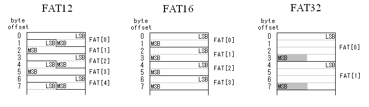

このドキュメントは、英語の苦手な方けにFAT32ファイルシステム仕様書(以下FAT仕様書)を読み解くためのガイドとして書かれています。オリジナルの内容に沿った記述になっていますが、一部省略されていたりオリジナルには無い解説が多く加えられていたりします。実際のDOS/Windowsの動作がFAT仕様書と異なる場合は、実際の動作に基づいて説明しています。また、このドキュメントの内容には意図しない(または意図した)誤りが混入している可能性があります。実際にFATファイル・システムをインプリメントする際は、必ず一次資料の情報および標準システムの動作を確認しながら行うこと。
ファイル・システムとは、狭義にはストレージ(補助記憶)上のデータを管理するためのシステム全体のことを指しますが、このドキュメントでは特にFATファイル・システムにおけるストレージ上のデータ・フォーマットを指し、これについて解説していきます。
FAT(File Allocation Table)ファイル・システムは1980年前後に端を発する、MS-DOSでサポートされたファイル・システムです。当初、500Kバイト以下のフロッピー・ディスクに適したシンプルなファイル・システムとして開発されました。その後、より大容量のストレージをサポートするため拡張されてきました。現在は、3つのFATサブ・タイプ(FAT12,FAT16,FAT32)があります。これらの基本的な違いは FAT上のエントリ(配列要素)のサイズで、それぞれの名前に示されるように 12/16/32ビットになります。これらは順に開発され、それぞれ完全に下位互換が保たれています(FAT16対応システムは必ずFAT12も包含し、FAT32対応システムは必ずFAT12/16も包含する)。
ある一つの完結したFATファイル・システムを論理ボリューム(または論理ドライブ)と呼びます。FATの論理ボリュームは 3または 4つの領域で構成され、各領域は1個または複数のセクタで構成されます。それぞれの領域はボリューム上に次の順に配置されます。
FATファイル・システムは、最初は x86プロセッサを搭載する IBM PC向けに開発されてきました。これの重要な点は、ストレージ上において FATファイル・システムのデータは、全てリトル・エンディアンでストアされることです。もし、対象プラットフォームのアーキテクチャがビッグ・エンディアンのときは、ストレージ上の BPB/FAT/ディレクトリ構造体にアクセスする際にエンディアン変換が必要になります。また、16/32ビットのデータ・フィールドは、そのワード境界にアライメントしているとは限りません。対象 CPUがリトル・エンディアンであっても、非アライメントのワード・アクセスが正しく行えない場合は、やはりバイト単位でアクセスする必要があります。
以上のような理由から、FATボリューム上のデータを typedef struct で定義して構造体メンバとしてアクセスする方法は、パッキング・オプションの環境依存問題も加わりきわめてポータビリティの悪いコードになります。FATボリュームを単純なバイト配列としバイト単位でアクセスする方法は、若干の可読性の低下と引き替えに最良のポータビリティが得られます。
"0x"で始まる数値は16進数とし、それ以外の数値は10進数とします。
各単位の接頭辞"K"は2の10乗(=1024)とします。同様に"M"は2の20乗(=1048576)、"G"は2の30乗(=1073741824)、"T"は2の40乗とします。
このドキュメントに含まれるプログラム・コードの断片は C言語を想定して書かれていますが、文法には厳密ではありません。
プログラム・コードの断片には、32ビット値と 16ビット値が適当に混在しています。プログラマは型変換によるデータの欠落を認識しそれを避ける方法を知っていることとします。また、全てのデータ型は符号無しとします。符号付きで計算すると意図しない結果になることがあるので行ってはいけません。
セクタとはストレージを読み書きする際の最小単位で、一般的に 512/1024/2048バイトのセクタ・サイズが用いられています。それぞれのセクタはセクタ番号で識別され、ストレージの先頭を 0として順に割り振られます。このドキュメントでは、単に「セクタ番号」と言った場合は、ボリュームの先頭セクタを 0とした相対的な番号とします。ストレージ先頭からの絶対的な位置を示す場合は、「物理セクタ番号」と表記します。
FATボリュームで最も重要なデータ構造体は、BPB(BIOS Parameter Block)で、その FATボリュームに関するパラメータが記録されます。BPBはブート・セクタに配置されます。このセクタはよくPBR(Private Boot Record)やVBR(Volume Boot Record)などと呼ばれていますが、重要なのは単純にそれが予約領域の先頭セクタ(つまりボリュームの先頭セクタ)であるということです。
BPBは FATファイル・システムの機能追加のたびに拡張されてきました。最初に起きた混乱は BPBの新設によるものです。MS-DOS 1.xでは、ブート・セクタに BPBが存在しませんでした。この最初のバージョンの FATファイル・システムでは、2つのフォーマット(片面および両面360Kバイトの 5.25インチフロッピー・ディスク)しか存在せず、どちらのタイプか決定するのは、ブート・セクタ直後から始まるFATの先頭バイト(FAT[0]の下位8ビット)の値を調べることで行われていました。
この手のメディア決定方法は、MS-DOS 2.xで BPBをブート・セクタに置くことにより取って代わられ、FATの先頭バイトを見る方法はサポートされなくなりました。現在は全てのFATボリュームは、ブート・セクタに BPBを置かなければなりません。
BPBは FATボリュームの認識に関して 2度目の混乱(どれが正しいパラメータなのか?)をもたらしました。MS-DOS 2.xで定義された BPBでは、65536セクタ(セクタ・サイズ 512バイトで 32Mバイト)未満のボリュームにしか対応できませんでした。この制限は、ボリュームの総セクタ数を示すフィールドが 16ビットであったことによります。この制限は、MS-DOS 3.xで BPBを拡張して、32ビットのフィールドを追加することで対処されました。
次の BPBの変更は、FAT32ファイル・システムが現れた Windows 95 OSR2です。当時 FAT16では最大クラスタ数と最大クラスタ・サイズによるボリューム・サイズの制限(2Gバイト)が問題になっていました。FAT32のサポートで、2Gバイトを越えるボリューム・サイズを実現しています。FAT32は仕様上は最大 8Tバイト(512バイト/セクタでは 2Tバイト)まで対応しますが、32Gバイトを超えるボリュームでは FAT以外のファイル・システム(NTFSやexFATなど)の使用が推奨されています。
次の表に、ブート・セクタのデータ・フィールドを示します。表に示すBPB_で始まる名前のフィールドは、BPBの一部です。BS_で始まる名前のフィールドは BPBとは関係なく、単にブート・セクタを構成するフィールドに過ぎません。
FAT32ボリュームの BPBは、BPB先頭からBPB_TotSec32フィールドまで FAT12/FAT16ボリュームと共通で、それ以降は FATタイプが FAT32か FAT12/FAT16かで異なります。36バイト目以降のフィールドはどちらか一方のフィールドのみ存在することになります。FATタイプの決定方法については後に解説。
| 名前 | Offset | Size | 解説 |
|---|---|---|---|
| BS_jmpBoot | 0 | 3 | ブート・ストラップ・コードへのジャンプ命令(x86命令)。このフィールドには次の 2つのフォーマットがあり、前者が一般的。 0xEB, 0x??, 0x90 (ショート・ジャンプ+NOP) 0xE9, 0x??, 0x?? (ニア・ジャンプ) ??はジャンプ先により異なる任意の値。これらから外れたフォーマットの場合、そのボリュームは Windowsで認識されない。 |
| BS_OEMName | 3 | 8 | "MSWIN4.1"が推奨される。ほかに"MSDOS5.0"などがよく使われる。このフィールドに関しては、多くの誤解がある。これは単なる名前である。マイクロソフトのOSはこのフィールドに何ら注意を払わないが、いくつかの FATドライバは何らかの参照を行う。この文字列が推奨されるのは、それが互換性問題を最小にする設定であることが理由である。何か違う値を設定しても良いが、いくつかの FATドライバはそのボリュームを認識できないかも知れない。このフィールドは、たいていはそのボリュームを作成したシステムを示している。 |
| BPB_BytsPerSec | 11 | 2 | バイト単位のセクタ・サイズ。有効な値は、512, 1024, 2048または 4096である。マイクロソフトのOSはこれらのセクタ・サイズを適切にサポートする。しかし、サポートするセクタ・サイズを 512に限定していても、このフィールドが 512であることをチェックしない FATドライバが多く存在するため、最大限の互換性が要求されるときは 512を使うべきである。ただし、それは単に互換性に関することであるというのを誤解しないこと。この値は、そのボリュームを格納するストレージのセクタ・サイズと同じでなければならない。 |
| BPB_SecPerClus | 13 | 1 | アロケーション・ユニット(割り当て単位)当たりのセクタ数。FATファイル・システムでは、アロケーション・ユニットのことをクラスタと呼んでいる。これは 1個以上の連続したセクタのブロックのことで、データ領域はこれを単位に管理される。クラスタ当たりのセクタ数は、2の累乗でかつ 1以上の値でなければならない。したがって、使用できる値は、1, 2, 4, 8, ..., 128ということになるが、クラスタ・サイズ(BPB_BytsPerSec * BPB_SecPerClus)が 32Kバイトを越す値は使用すべきではない。一部のシステム(例えば Windows98や NT系Windows)ではセクタ・サイズの大きなメディアにおいて 64K/128K/256Kバイトといったクラスタ・サイズを扱えるが、そのようなボリュームでは多くのシステムやディスク・ユーティリティが正しく動作しないかもしれない。 |
| BPB_RsvdSecCnt | 14 | 2 | 予約領域のセクタ数。このフィールドは 0であってはならない(少なくともこの BPBを含むブート・セクタそれ自身が存在する)。FAT12/16ボリュームでは 1以外の値にすべきではない。なぜなら、FAT12/16の予約領域は 1セクタであると決め打ちし、このフィールドをチェックしないFATドライバが多く存在するからである。FAT32ボリュームでは代表的には 32である。マイクロソフトの OSは 1以上の値を適切にサポートする。 |
| BPB_NumFATs | 16 | 1 | FATの数。このフィールドは常に2に設定すべきである。1以上の何らかの値もまた有効ではあるが、多くのソフトウェア・ツールやいくらかの OSの FATドライバは、2以外では正しく動作しないかも知れない。マイクロソフトの FATドライバは 2以外の値も適切にサポートするが、なお 2以外の値は使用しないことが強く推奨される。 このフィールドの標準値が 2であるのは FATデータに冗長性を持たせるためで、もし FAT中の一部のセクタが破損しても二重化された別の FATがあるので、データが失われる危険が少なくなる。メモリ・カードのような非ディスク・ストレージではそのような冗長性は無用な機能なので、2個目の FATのスペースを省くため 1を使っても良いが、いくつかの FATドライバはそのようなボリュームを正しく認識しないかも知れない。 |
| BPB_RootEntCnt | 17 | 2 | FAT12/16ボリュームでは、ルート・ディレクトリに含まれるディレクトリ・エントリ(=32バイト長)の数(=テーブル・サイズ)を示す。このフィールドには、ディレクトリ・テーブルのサイズが 2セクタ境界にアライメントする値、つまり、BPB_RootEntCnt * 32がBPB_BytsPerSecの偶数倍になる値を設定すべきである。最大の互換性のためには、FAT16では 512に設定すべきである。FAT32ボリュームではこのフィールドは使われず、常に 0でなければならない。 |
| BPB_TotSec16 | 19 | 2 | ボリュームの総セクタ数(古い16ビット・フィールド)。この値は、ボリュームの 4つの領域全てを含んだセクタ数である。FAT12/16でボリュームのセクタ数が0x10000以上になるときは、このフィールドには無効値(0)が設定され、真の値がBPB_TotSec32に設定される。FAT32ボリュームでは、このフィールドは常に無効値でなければならない。 |
| BPB_Media | 21 | 1 | 区画分けされた固定ディスク・ドライブでは0xF8が標準値である。区画分けされないリムーバブル・メディアでは0xF0がしばしば使われる。このフィールドに有効な値は、0xF0, 0xF8, 0xF9, 0xFA, 0xFB, 0xFC, 0xFD, 0xFEおよび0xFFで、ほかに重要な点はこれと同じ値を FAT[0]の下位 8ビットに置かなければならないということだけである。これは、MS-DOS 1.xでメディア・タイプの設定に遡り、既に使われていない。 |
| BPB_FATSz16 | 22 | 2 | 1個の FATが占めるセクタ数。このフィールドは FAT12/FAT16ボリュームでのみ使われる。FAT32ボリュームでは必ず無効値(0)でなければならず、代わりにBPB_FATSz32が使われる。FAT領域のサイズは、この値 * BPB_NumFATsセクタとなる。 |
| BPB_SecPerTrk | 24 | 2 | トラック当たりのセクタ数。このフィールドは、ジオメトリを持つストレージにのみ関係し、IBM PCのディスクBIOS (INT 0x13)で使用される。それ以外では意味がない。 |
| BPB_NumHeads | 26 | 2 | ヘッド数。このフィールドは、ジオメトリを持つストレージにのみ関係し、IBM PCのディスクBIOS (INT 0x13)で使用される。それ以外では意味がない。 |
| BPB_HiddSec | 28 | 4 | ストレージ上でこのボリュームの手前に存在する隠れた物理セクタの数。一般的に INT 0x13でアクセスされるストレージに関するものであり、どのような値が入るかはシステム依存。ボリュームがストレージの先頭から始まる場合(つまりフロッピー・ディスクなど区画分けされていないもの)では常に 0であるべきである。 |
| BPB_TotSec32 | 32 | 4 | ボリュームの総セクタ数(新しい32ビット・フィールド)。この値は、ボリュームの4つの領域全てを含んだセクタ数である。FAT12/16ボリュームで総セクタ数が0x10000未満のとき、このフィールドは無効値(0)でなければならなず、真の値はBPB_TotSec16に設定される。FAT32ボリュームでは常に有効値が入る。 |
ここから先のフィールドはそのボリュームが FAT12/16か FAT32かで異なるので、これらを参照する前に FATタイプを決定しなければなりません。また、FAT32ボリュームでは FAT12/16ボリュームに存在しないフィールドもあります。
| 名前 | Offset | Size | 解説 |
|---|---|---|---|
| BS_DrvNum | 36 | 1 | INT 0x13で使われるドライブ番号。このフィールドは、MS-DOSのブートストラップで使われ、フロッピー・ディスクでは0x00、固定ディスクでは0x80である。実際にはOS依存。 |
| BS_Reserved1 | 37 | 1 | 予約(WindowsNTで使用)。フォーマットするときは常に 0を設定すべきである。 |
| BS_BootSig | 38 | 1 | 拡張ブート・シグネチャ (0x29)。これは、続く3つのフィールドが存在することを示す。 |
| BS_VolID | 39 | 4 | ボリューム・シリアル番号。このフィールドとBS_VolLabでリムーバブル・ストレージにおけるボリュームの追跡をサポートする。これらの値は FATドライバが不正なメディア交換を検出するのを助ける。この IDは大抵は現在時刻から生成される。 |
| BS_VolLab | 43 | 11 | ボリューム・ラベル。このフィールドは、ルート・ディレクトリに記録される 11バイトのボリューム・ラベルに一致する。FATドライバは、ルート・ディレクトリのボリューム・ラベルを更新したら、この値にも反映させるべきである。ボリューム・ラベルが無い場合は、"NO NAME "を設定する。 |
| BS_FilSysType | 54 | 8 | "FAT12 ", "FAT16 "または"FAT "のうちいずれかの文字列。多くの人はこの文字列が FATタイプの決定に何らかの関与をしていると思っているが、これは間違いである。このフィールドの名前から、これは BPBの一部ではないことが分かると思う。この文字列は不正確だったり設定されていなかったりすることがしばしばあるので、マイクロソフトの FATドライバは FATタイプの決定にこのフィールドを使わない。一部の FATドライバはこの文字列を参照しているので、互換性問題を避けるためこの文字列はそのボリュームの FATタイプに基づいて設定されるべきである。 |
| 名前 | Offset | Size | 解説 |
|---|---|---|---|
| BPB_FATSz32 | 36 | 4 | 1個の FATが占めるセクタ数。FAT領域のサイズは、この値 * BPB_NumFATsセクタとなる。このフィールドに限り FATタイプ決定前に参照する必要があるが、BPB_FATSz16が FAT12/16で必ず有効、FAT32で必ず無効になるので問題はない。 |
| BPB_ExtFlags | 40 | 2 | ビット3～0: 0から始まるアクティブなFAT。ビット7が1のとき有効。 ビット6～4: 予約。 ビット7: 0は全てのFATがミラーリングされることを示す。1はビット3～0で示される1個のFATだけがアクティブであることを示す。 ビット15～8: 予約。 |
| BPB_FSVer | 42 | 2 | FAT32ボリュームのバージョン。上位バイトがメジャー・バージョン番号、下位バイトがマイナー・バージョン番号。これは、将来古い FAT32ドライバでマウントされることを考慮することなく FAT32を拡張するためのもの。なお、このドキュメントでは、バージョン 0.0について解説している。 ディスク・ユーティリティは、設計された時点より新しいバージョンの FAT32ボリュームに対しては操作を行うべきでない。また、FAT32ドライバはこのフィールドをチェックし、その値がドライバの書かれた時点より新しいバージョンの場合、そのボリュームをマウントすべきではない。 |
| BPB_RootClus | 44 | 4 | ルート・ディレクトリの先頭クラスタ番号。大抵は 2(つまり先頭クラスタ)が設定されるが、2である必要はない。 ディスク・ユーティリティは、ルート・ディレクトリの位置を変える場合、なるべく先頭で正常なクラスタに置くようにすべきである。これは、もしこのフィールドが誤ってクリアされたとき、ディスク修復ツールが容易にルート・ディレクトリを見つけられるようにするためである。 |
| BPB_FSInfo | 48 | 2 | FAT32ボリュームの予約領域中でFSINFO構造体の置かれるセクタ番号。常に 1(つまりブート・セクタの次)。 |
| BPB_BkBootSec | 50 | 2 | 0以外の場合、FAT32ボリュームの予約領域中でブート・セクタのバックアップが置かれるセクタを示す。大抵は 6で、この値以外は推奨されない。 |
| BPB_Reserved | 52 | 12 | 将来の拡張のために予約。フォーマット時はゼロを設定すべきである。 |
| BS_DrvNum | 64 | 1 | FAT12/16での説明に同じ。 |
| BS_Reserved1 | 65 | 1 | FAT12/16での説明に同じ。 |
| BS_BootSig | 66 | 1 | FAT12/16での説明に同じ。 |
| BS_VolID | 67 | 4 | FAT12/16での説明に同じ。 |
| BS_VolLab | 71 | 11 | FAT12/16での説明に同じ。 |
| BS_FilSysType | 82 | 8 | 常に"FAT32 "。このフィールドは FATタイプの決定には関与しない。 |
ブート・セクタには、もう一つ重要なことがあります。セクタをバイト列として見たとき、オフセット510, 511はそれぞれ0x55, 0xAAでなければなりません。この値が確認できないときは、そのブート・セクタは無効です。多くの FATドキュメントは、「ブート・セクタの最後の 2バイトは0x55, 0xAAである」という誤った解説をしています。これは、セクタ・サイズが 512のときは正しいのですが、それ以外の場合は誤ったものとなります。0x55, 0xAAは、常にオフセット510, 511に置かれなければなりません(これとセクタの最後の 2バイトの両方に置くのもまたよい)。マイクロソフトのフォーマッタでは、最終の 2バイトには設定しません。
ボリュームのサイズ(BPB_TotSec16/32フィールドの値)は、そのボリュームの置かれているコンテナ(ストレージや区画)のサイズより小さくても、全く問題ではありません。アライメントの関係でそのような状態になることは良くあります。
このようなアライメント・ホールは、ストレージ容量の無駄にはなりますが、FATボリューム自体の不正を意味するものではありません。しかし、BPB_TotSec16/32の値がそのボリュームのコンテナのサイズより大きい場合は、FATボリュームの破損または不正な設定など深刻な状態と言えます。このようなボリュームを操作した場合、壊滅的なデータ破壊をもたらすことになるので、そのような状態を検出したときは、FATドライバはそのボリュームのマウントを拒否すべきです。
次に重要な領域はFATそれ自身です。FATの役目は、ファイルやディレクトリのデータ領域における配置(クラスタ・チェーン)を記録することです。ファイルもディレクトリも FAT上ではその区別はありません。
FATはボリュームのデータ領域をクラスタ番号を使ってマッピングします。FATの各エントリは各クラスタと1:1で対応付けされていて、FAT[2]がデータ領域の先頭クラスタ(クラスタ#2)、FAT[3]がその次(クラスタ#3)…というようになります。FATの先頭 2エントリ(FAT[0], FAT[1])は、データ・クラスタに結びつけられていません。
データ領域の先頭セクタ(=クラスタ#2の先頭セクタ)は、次に示すように BPBフィールドから算出されます。まず最初に、ルート・ディレクトリ領域の占めるセクタ数を算出します。
RootDirSectors = ((BPB_RootEntCnt * 32) + (BPB_BytsPerSec - 1)) / BPB_BytsPerSec;
32というのは、ディレクトリ・エントリ1個のサイズ(バイト)です。当然ですが、セクタ境界に乗らない場合は端数を切り上げて引っかかるセクタを含めます (端数の出る設定は推奨されていませんが)。FAT32ボリュームでは、BPB_RootEntCntは常に 0なので、ルート・ディレクトリ領域も 0になります。
データ領域の先頭は次のように求めます。
FATSectors = BPB_FATSz16 ? BPB_FATSz16 : BPB_FATSz32; FirstDataSector = BPB_ResvdSecCnt + (BPB_NumFATs * FATSectors) + RootDirSectors;
これによりデータ領域の開始セクタ番号が求まります。ストレージが区画分けされている場合などボリュームがストレージの先頭から始まらない場合、セクタ番号は物理セクタ番号と一致しません。
ここで、ある有効なクラスタ#Nが与えられたとすると、そのクラスタの先頭セクタ番号は、次のようになります。
FirstSectorofCluster = ((N - 2) * BPB_SecPerClus) + FirstDataSector;
これについては、どのように行うのが正しいのか相当な混乱があり、大小様々なエラーをもたらしています。実際のところ、FATタイプの決定は次に定義されるようにきわめてシンプルなロジックで行われます。
FATタイプ(FAT12/16/32)は、ボリューム上のクラスタ数によってのみ決定され、それ以外の手段は「無い」。
では、そのクラスタ数はどのように算出されるのか解説します。これは簡単に言うと、データ領域に存在できるクラスタの数、つまりデータ領域のサイズをクラスタ・サイズで割った値となります。この計算は、全てBPBフィールドの数値を使って行われます。使用する値は全タイプ共通フィールドのものだけなので、タイプ別フィールドを参照する前に FATタイプを決定できます。まず、次に示すようにルート・ディレクトリ領域のセクタ数を求めます。
RootDirSectors = ((BPB_RootEntCnt * 32) + (BPB_BytsPerSec - 1)) / BPB_BytsPerSec;
FAT32ボリュームではBPB_RootEntCntが常に 0なのでRootDirSectorsも 0になり、ルート・ディレクトリ領域はありません。次にFAT領域のサイズを求め、これらを使ってデータ領域のセクタ数を求めます。これは次に示すように算出します。
TotalSect = BPB_TotSec16 ? BPB_TotSec16 : BPB_TotSec32; FATSectors = (BPB_FATSz16 ? BPB_FATSz16 : BPB_FATSz32) * BPB_NumFATs; DataSectors = TotalSect - BPB_ResvdSecCnt - FATSectors - RootDirSectors;
つまり、総セクタ数から予約領域、FAT領域、ルート・ディレクトリ領域を引いた残りがデータ領域のセクタ数です。あとは、
CountofClusters = DataSectors / BPB_SecPerClus;
としてクラスタ数が求まります。もし端数が出たら、切り捨てます。クラスタ数は、正確にはクラスタ#2から始まるデータ・クラスタの数です。したがって、「クラスタ数 N」のボリュームにおいて、有効な「最大クラスタ番号は N + 1」となります。これで FATタイプを決定できます。これは次のように行います。
これが FATタイプ決定の唯一の手段です。FAT12ボリュームが4085を超えるクラスタを持つことはありませんし、FAT16ボリュームが4086クラスタ未満だったり、65525クラスタを超えたりすることもありません。もしもこのルールを破った不正なFATボリュームの作成を試みても、正しく設計されたFATドライバは意図したものとは異なる FATタイプと認識し、結果としてそれを扱うことができません。
しかし、この境界値は明確に決まっているわけではありません。クラスタ番号の取り得る値からすると上記のようになりますが、実際に出回っている情報やFATドライバではその多くにバラツキ(1,2,8,10または16クラスタ)があります。たとえば、FAT12の最大クラスタ数一つ取っても、FAT仕様書では 4084としている一方、Windowsの動作では 4086となっています。基準となるべきFAT仕様書やシステムからしてこのような状態なので、存在する全ての FATコードにおいて最大限の互換性を確保するため、フォーマットの際は境界値近辺のクラスタ数のボリュームの作成は避けることが推奨されます。FAT仕様書では境界値から 16は離したクラスタ数に設定すべきとしています。
また、このルールを知らずに書かれた FATドライバは、クラスタ数ではなくBS_FilSysTypeフィールドの文字列で FATタイプを決定しているものが多いようです。そのような FATドライバの救済のためにも、BS_FilSysTypeには実際の FATタイプに矛盾しない文字列の設定が推奨されています。
FATタイプがクラスタ数で決まるということは、ボリュームのサイズによって成り得る FATタイプも決まってくるということが分かります。例えば、クラスタ・サイズを512～32Kバイトとした場合、
と言うことができます(境界は概値)。特に最後の項目は、FAT32登場の背景としてまだ記憶に新しいことです。
FATに関連してもう一つ重要な点は、FATにアクセスする手順です。まず、クラスタ#Nのエントリは FAT中のどこに置かれるのか知る必要があります。FAT16/32の場合これははきわめて単純で、FATは一般的な 16/32ビット整数の配列そのものです。メモリ上の配列と違う点は、各要素は連続した領域ではなく、FAT領域の先頭セクタから連続した複数のセクタにまたがっているということです。そのクラスタ#Nの FATエントリ(FAT[N])がどのセクタのどのバイト位置かは、次の計算で求められます。
FAT16エントリ位置:
ThisFATSecNum = BPB_ResvdSecCnt + (N * 2 / BPB_BytsPerSec);
ThisFATEntOffset = (N * 2) % BPB_BytsPerSec;
FAT32エントリ位置:
ThisFATSecNum = BPB_ResvdSecCnt + (N * 4 / BPB_BytsPerSec);
ThisFATEntOffset = (N * 4) % BPB_BytsPerSec;
これにより求められたセクタ番号のバイト位置から 2バイト(FAT16)または 4バイト(FAT32)がそのFATエントリの値です。バイト順はリトル・エンディアンです。FAT16/32ボリュームでは、FATエントリがセクタ境界にまたがることはありません。
FAT32に関してはもう一つ重要な点があります。FAT32ボリュームの FATエントリは 32ビットを占めますが、実際にはその上位4ビットは予約で、下位28ビットだけが有効な値です。予約ビットはフォーマット時に 0を設定され、それ以降は変更してはいけません。このため、FAT32ボリュームの FATエントリから値を取り出すときは、0x0FFFFFFFで上位4ビットを ANDマスクする必要があります。また、FATエントリに何らかの値を設定するときは、上位4ビットの値を保存する必要があります。
FAT32エントリ取り出し:
ReadSector(SecBuff, ThisFATSecNum);
ThisEntryVal = *(uint32*)&SecBuff[ThisFATEntOffset] & 0x0FFFFFFF;
FAT32エントリ設定:
ReadSector(SecBuff, ThisFATSecNum);
tmp = *(uint32*)&SecBuff[ThisFATEntOffset];
tmp = (tmp & 0xF0000000) | (NewEntryVal & 0x0FFFFFFF);
*(uint32*)&SecBuff[ThisFATEntOffset] = tmp;
WriteSector(SecBuff, ThisFATSecNum);
FAT12では、FATエントリのサイズが 12ビット(1バイト半)なので、少しだけ複雑になります。クラスタ番号が偶数か奇数かによってバイト中のビット配置が異なるため、それぞれ処理を分ける必要があります。
FAT12エントリ位置:
ThisFATSecNum = BPB_ResvdSecCnt + ((N + (N / 2)) / BPB_BytsPerSec);
ThisFATEntOffset = (N + (N / 2)) % BPB_BytsPerSec;
FAT12エントリ取り出し:
ReadSector(SecBuff, ThisFATSecNum);
if (N & 1) { /* 奇数クラスタ番号 */
ThisEntryVal = (SecBuff[ThisFATEntOffset] >> 4)
| ((uint16)SecBuff[ThisFATEntOffset + 1] << 4);
} else { /* 偶数クラスタ番号 */
ThisEntryVal = SecBuff[ThisFATEntOffset]
| ((uint16)(SecBuff[ThisFATEntOffset + 1] & 0x0F) << 8);
}
FAT12エントリ設定:
ReadSector(SecBuff, ThisFATSecNum);
if (N & 1) { /* 奇数クラスタ番号 */
SecBuff[ThisFATEntOffset] = (SecBuff[ThisFATEntOffset] & 0x0F)
| (NewEntryVal << 4);
SecBuff[ThisFATEntOffset + 1] = NewEntryVal >> 4;
} else { /* 偶数クラスタ番号 */
SecBuff[ThisFATEntOffset] = NewEntryVal;
SecBuff[ThisFATEntOffset + 1] = (SecBuff[ThisFATEntOffset + 1] & 0xF0)
| ((NewEntryVal >> 8) & 0x0F);
}
WriteSector(SecBuff, ThisFATSecNum);
しかし、残念ながらこのコードは正しく動作しません。なぜなら、ThisFATEntOffsetがセクタの最終バイトになるとき、そのエントリがセクタ境界にまたがるからです。このような例外も適切に処理されるように何らかの工夫をする必要があります。
ここまでのまとめとして、各FATタイプ別のFATエントリの格納状態を次の図に示します。

FATボリューム上のファイルやディレクトリは、ディレクトリ・エントリに記録され管理されます。ディレクトリ・エントリにはそのファイルのデータの先頭クラスタ番号が記録され、これが FATへの入り口になります。先頭クラスタ番号は、そのファイルのデータの記録開始クラスタを意味しています。サイズが 0のファイルはデータ・クラスタを持たず、 ディレクトリ・エントリに記録される先頭クラスタ番号は、常に 0になります。クラスタ番号から対応するデータ領域内のクラスタの位置を得るには、次のように計算します。クラスタ番号を Nとすると、
ThisDataSect = BPB_ResvdSecCnt /* 予約領域のサイズ */
+ BPB_NumFATs * FATSectors /* FAT領域のサイズ */
+ RootDirSectors /* ルート・ディレクトリ領域のサイズ */
+ (N - 2) * BPB_SecPerClus; /* データ領域先頭からの位置 */
これにより、クラスタ#Nの先頭セクタ番号が求まります。FATSectorsとRootDirSectorsは、FATデータ構造体の解説で使用した値です。
ファイル・サイズがクラスタ・サイズより大きい場合は、データは複数のクラスタにまたがって記録されます。そのクラスタに対応する FATエントリの値は、そのクラスタの次のクラスタ番号を示しているので、それを順に辿っていくことにより、ファイル中の任意のデータ・セクタにアクセスすることができます。逆に辿ることはできません。このクラスタ・チェーンの最後のクラスタの FATエントリには、チェーンの終了を示す特別な値(EOCマーク)が入ります。この値はどのクラスタ番号にも一致しない値で、各FATタイプにより次に示す値になります。普通は代表値が使われますが、指定範囲内の値ならどれでも同じです。
もう一つ特別な値として、不良クラスタ・マークがあります。不良クラスタとは、メディアの不良などによる使用不能セクタを含むクラスタのことです。ボリュームのフォーマット、精査、修復などの際に発見された不良クラスタは FATに記録され、以降そのクラスタがファイルに割り当てられることはありません。不良クラスタ・マークの値は、FAT12では0xFF7、FAT16では 0xFFF7、FAT32では0x0FFFFFF7になります。
FAT12/16では有効クラスタ番号がこれらの値に一致することはありません。しかし、FAT32ではクラスタ数の上限が定義されていないので、有効クラスタ番号が不良クラスタ・マークに一致する可能性があります。このようなボリュームはディスク・ユーティリティ等の混乱を招くので、作成を避けるべきです。このため、FAT32のクラスタ数の上限は、実質的に268435444(約256M)となります。
一部のシステムでは、インプリメント上の理由からクラスタ数に制限のある場合があります。たとえば、Windows9X/Meでは FATサイズの上限が 16Mバイトになっているので、FAT32では約 4Mクラスタ以上のボリュームが扱えません。
FATエントリの値が 0のクラスタは、未使用でどのファイルにも割り当てられていないことを示しています。0以外の値は、そのクラスタが既に使用中か不良で、新たな割り当ては不可能であることを意味します。未使用クラスタの数はどこにも記録されていないので、ボリュームの空きサイズを得るには、全ての FATエントリを調べなければなりません。FAT32ではクラスタ数が膨大になるので、これを補助する手段(FSInfo)が提供されます。
FATの先頭 2個のエントリ(FAT[0], FAT[1])は、データ・クラスタには結びつけられていません。これらの内容は、フォーマット時に次のように初期化されます。
??は、BPB_Mediaと同じ値が入ります。FAT[0]の値は特別な機能を持ちませんが、FAT[1]の特定のビットは、FAT16/32において次のような機能を持ちます。
これらのビットは、ボリュームの不正状態の可能性を示すフラグです。これをサポートするOSは、ボリュームの状態をこれらのフラグに記録し、次回起動時にこれらのフラグをチェックしてディスク修復ツールの自動起動を行ったりします。
FAT領域に関してさらに 2つの重要な点があります。一つは、FATの最終セクタは必ずしも全て使われるわけではないということです。FATはセクタの途中で終わっていることがほとんどです。FATドライバは、未使用部分の値に関して何の前提も持ってはいけません。ボリューム作成時は、FAT領域はこの部分を含めてゼロで初期化されます (FAT[0], FAT[1]を除く)。もう一つは、BPBに示される FATサイズ(BPB_FATSz16/32)は、FATが実際に必要とするセクタ数より大きい場合もあるということです。つまり、FATの使用域の後に全く使われないセクタが続く場合もあります。これは、データ領域のアライメント調整などの目的で挿入されることがあります。これらのセクタもゼロで初期化されます。
ここまでのまとめとして、各FATタイプにおける FATエントリの値の範囲とその意味を示します。
| FAT12 | FAT16 | FAT32 | 解説 |
|---|---|---|---|
| 0x000 | 0x0000 | 0x00000000 | 未使用クラスタ |
| 0x001 | 0x0001 | 0x00000001 | 予約 |
| 0x002:0xFF6 | 0x0002:0xFFF6 | 0x00000002:0x0FFFFFF6 | 使用中クラスタ (値は次のクラスタ番号) |
| 0xFF7 | 0xFFF7 | 0x0FFFFFF7 | 不良クラスタ |
| 0xFF8:0xFFF | 0xFFF8:0xFFFF | 0x0FFFFFF8:0x0FFFFFFF | 使用中クラスタ (チェーンの終端) |
FATのサイズは、FAT12で最大 6KB、FAT16で最大 128KBでしたが、FAT32では数MB以上に達することもよくあります。こうした理由から、空きクラスタの検索や空きクラスタ数の取得などで FAT全域をアクセスするのをなるべく避けるため、FAT32ボリュームでは FSInfo構造体がサポートされます。この構造体はBPB_FSInfoで示される FSInfoセクタに記録されます。
| 名前 | Offset | Size | 解説 |
|---|---|---|---|
| FSI_LeadSig | 0 | 4 | 0x41615252。このセクタが実際に FSInfoセクタであることを示すシグネチャ1。 |
| FSI_Reserved1 | 4 | 480 | 予約。フォーマット時に 0で初期化し、使用してはならない。 |
| FSI_StrucSig | 484 | 4 | 0x61417272。このセクタが実際に FSInfoセクタであることを示すシグネチャ2。 |
| FSI_Free_Count | 488 | 4 | 空きクラスタ数をセットする。参考値で、必ずしも正しいとは限らない。0xFFFFFFFFの場合は実際に無効であることを示す。使用するときは少なくともそのボリュームのクラスタ数として有効かどうかチェックするべきである。 |
| FSI_Nxt_Free | 492 | 4 | 最後に割り当てられたクラスタ番号をセットする。参考値で、必ずしも正しいとは限らない。0xFFFFFFFFの場合は実際に無効であることを示す。この値は、FATドライバが新しいクラスタ・チェーンを作成するとき、空き検索を開始するクラスタ番号として使用できる。無効なときは多くは FAT[2]から検索する。 |
| FSI_Reserved2 | 496 | 12 | 予約。フォーマット時に 0で初期化され、以降使用してはならない。 |
| FSI_TrailSig | 508 | 4 | 0xAA550000。このセクタが実際に FSInfoセクタであることを示すシグネチャ3。 |
これ以外の FAT32の機能として、バックアップ・ブート・レコードというものがあります。これは、FAT12/16ボリュームでは1個しか存在しかなかったブート・セクタに冗長性を持たせるための機能です。これにより、何らかの理由でブート・セクタが破損した場合の回復の可能性を高めることができます。このセクタの位置は、BPB_BkBootSecに記録されています。この値は 6が強く推奨されているので、ブート・ローダや FATドライバはブート・セクタの読み込みに失敗したとき、セクタ#6からブート・レコードの読み込みを試みるようにコーディングされています。
FAT32ボリュームのブート・セクタは、実際には 3つの連続したセクタがブート・セクタとされているので、ブート・セクタから連続した 3セクタが保存領域にコピーされることになります。これら 3セクタは全て 510, 511バイト目に 0x55, 0xAAが記録されます。
ここでは長いファイル名のことは無視して、まずは基本機能である短いファイル名についてだけ解説します。FATのディレクトリの実体は特殊なアトリビュートを持ったファイルとして存在し、内容は 32バイト長のディレクトリ・エントリ構造体を格納するテーブルです。テーブル長の最大値は 65536エントリです。
ボリューム中唯一の特殊なディレクトリで必ず存在しなければならないのがルート・ディレクトリです。ルート・ディレクトリは、FAT12/16ボリュームでは FAT領域直後のディレクトリ領域に配置され、テーブル長もBPB_RootEntCntに示される固定長となります。FAT32ボリュームでは静的領域ではなく、ファイルやサブ・ディレクトリと同様にデータ領域に配置されます。サブ・ディレクトリと違う点は、それを指すディレクトリ・エントリを持たないということで、ルート・ディレクトリの開始クラスタ番号はBPB_RootClusで指定されます。
このほかにルート・ディレクトリがサブ・ディレクトリと違う点は、サブ・ディレクトリには必ずあるドット・エントリ(".", "..")を持たないことと、ボリューム・ラベル(ATTR_VOLUME_IDアトリビュートのセットされたエントリ)を置くことができるということです。次の表に FATボリュームのディレクトリ・エントリ構造体のフィールドを示します。
| 名前 | Offset | Size | 解説 |
|---|---|---|---|
| DIR_Name | 0 | 11 | 短いファイル名の本体名と拡張子。 |
| DIR_Attr | 11 | 1 | ファイル・アトリビュート。次のフラグのコンビネーションで表現される。上位2ビットは常に0でなければならない。
0x01: ATTR_READ_ONLY (書き込み禁止) 0x02: ATTR_HIDDEN (隠し) 0x04: ATTR_SYSTEM (システム) 0x08: ATTR_VOLUME_ID (ボリュームラベル) 0x10: ATTR_DIRECTORY (ディレクトリ) 0x20: ATTR_ARCHIVE (アーカイブ) 0x0F: ATTR_LONG_FILE_NAME (LFNエントリ) |
| DIR_NTRes | 12 | 1 | 短いファイル名の小文字情報を記録するフラグ(オプション)。 0x08: 本体名がすべて小文字。 0x10: 拡張子がすべて小文字。 |
| DIR_CrtTimeTenth | 13 | 1 | DIR_CrtTimeのサブセコンド情報。DIR_CrtTimeの分解能は 2秒であるが、それをさらに 200分割した値(0～199)が入る。サポートしない場合は、作成時に 0を設定し、以降変更しない。 |
| DIR_CrtTime | 14 | 2 | このファイルが作成された時刻(オプション)。サポートしない場合は、作成時に 0を設定し、以降変更しない。 |
| DIR_CrtDate | 16 | 2 | このファイルが作成された日付(オプション)。サポートしない場合は、作成時に 0を設定し、以降変更しない。 |
| DIR_LstAccDate | 18 | 2 | このファイルを最後にオープンした日付(オプション)。時刻情報は無い。書き込みアクセスの場合はDIR_WrtDateと同じ値を設定すべきである。サポートしない場合は、作成時に 0を設定し、以降変更しない。 |
| DIR_FstClusHI | 20 | 2 | このファイルの先頭クラスタ番号の上位 16ビット。FAT12/16では常に 0。 |
| DIR_WrtTime | 22 | 2 | このファイルが最後に書き込まれた(書き込み後クローズされた)時刻。サポート必須。 |
| DIR_WrtDate | 24 | 2 | このファイルが最後に書き込まれた日付。サポート必須。 |
| DIR_FstClusLO | 26 | 2 | このファイルの先頭クラスタ番号の下位 16ビット。ファイル・サイズが 0のときは常に 0。 |
| DIR_FileSize | 28 | 4 | このファイルのバイト単位のサイズ。ディレクトリの場合は常に 0。 |
DIR_Nameフィールドの先頭バイトDIR_Name[0]は、そのエントリの状態を示す重要なデータです。この値が0xE5または0x00の場合は、そのエントリは空で新たに使用可能です。それ以外の値の場合は、そのエントリは使用中です。値が0x00のときは、それ以降のエントリも全て0x00であることが保証されるので、無駄な検索を省くことができます。ファイル名の先頭バイトが0xE5になる場合は、代わりに0x05をセットします。
DIR_Nameフィールドは 11バイトの文字列で、本体と拡張子の8+3バイトの文字列として格納されます。その際、本体と拡張子を区切るピリオドは除去されます。本体 8バイト、拡張子 3バイトに満たない場合は、それぞれ残りの部分にスペース(0x20)が詰められます。文字コードには、ローカルなコード・セット(日本語の場合は CP932 Shift_JIS)が使われます。次に実際の例を示します。
ファイル名 DIR_Name 解説 "FILENAME.TXT" "FILENAMETXT" ピリオドは除去される "DOG.AVI" "DOG AVI" 8+3バイトに満たないときはスペースでパディング "File.Txt" "FILE TXT" ASCII小文字は全て大文字に置き換えられる "file.TXT" "FILE TXT" ↑に同じ "蜃気楼.JPG" "・気楼 JPG" "蜃"の第一バイトが0xE5なので0x05に置き換え "NO_EXT" "NO_EXT " 拡張子無し "NO_EXT." "NO_EXT " ↑に同じ ".cnf" ※本体無しは不可 "new file.txt" ※スペースは使用不可 "file[1].c++" ※[]や+はダメ文字 "longext.jpeg" ※8+3形式に入らないのはダメ "arch.tar.gz" ※8+3形式に入らないのはダメ
ファイル名に使用可能な文字は、ASCIIコードの
0～9 A～Z ! # $ % & ' ( ) - @ ^ _ ` { } ~
と、拡張文字コード(0x80～0xFF)です。ASCII小文字 a～z は使用できませんが、与えられた場合はエラーとせず、大文字に置き換られて記録・検索されます。拡張文字の小文字も ä→Ä のように大文字変換されますが、そのコード・ページに対応する大文字が存在しない場合は、ê→E のように変換されます。このように拡張文字の大文字変換はコード・ページ間で異なるので、異なるコード・ページ間での互換性が低下します。日本語環境での拡張文字の扱いについては、この先の「システム間の互換性」を参照してください。
ある一つのディレクトリの中では、全てのファイル名がユニークです。そのエントリの中にはDIR_Nameに同じ文字列を含むエントリは 2つ以上存在することはありません。DIR_Attrフィールドは、次の表に示すようにそのファイルの属性を示します。
| フラグ | 解説 |
|---|---|
| ATTR_READ_ONLY | 書き込み禁止。このファイルへの書き込みや消去は、拒否されるべきである。 |
| ATTR_HIDDEN | 通常のディレクトリ表示でこのファイルを表示しない。(OS依存) |
| ATTR_SYSTEM | システム関連の重要ファイルであることを示す。(OS依存) |
| ATTR_VOLUME_ID | この属性を持つエントリは、ルート・ディレクトリに 1個だけ存在できる。このエントリの持つ名前は、そのボリュームのラベル名である。このエントリはデータを持たず、DIR_FstClusHI、DIR_FstClusLOおよびDIR_FileSizeは常に 0でなければならない。 |
| ATTR_DIRECTORY | このファイルはサブ・ディレクトリのコンテナである。以下で解説。 |
| ATTR_ARCHIVE | ディレクトリ・エントリへの何らかの書き込みが発生したとき FATドライバによってセットされる。バックアップ・ツールが変更されたファイルを見つけるために使用し、バックアップ後にクリアする。現在はあまり使われていない。 |
| ATTR_LONG_NAME | このフラグの組み合わせは、そのエントリが長いファイル名の一部であることを示す。これについては後ろのセクションで解説。 |
ファイルを作成するときは、ディレクトリ・テーブルの空きを探してその名前のエントリを作成します。テーブルがクラスタの最後まで埋まっているときは、新たなクラスタを割り当ててチェーンを延ばします。ただし、エントリ数は 65536を越えることはできません。静的ディレクトリ・テーブル(FAT12/16のルート・ディレクトリ)の場合は、テーブルが満杯になったらそれ以上のエントリは作成できません。エントリのDIR_AttrフィールドにはATTR_ARCHIVEフラグを設定し、DIR_FstClusHI, DIR_FstClusLO, DIR_FileSizeは 0が初期値となります。ファイルにデータが書き込まれ、ファイル・サイズが 0→1以上に変化するとき新しいクラスタが割り当てられ、DIR_FstClusHI, DIR_FstClusLOにそのクラスタ番号がセットされます。以降、ファイル・サイズが増大してクラスタがあふれるたびに新しいクラスタが割り当てられ、クラスタ・チェーンが延びていきます。
サブ・ディレクトリを作成するときは、その名前のエントリを作成し、DIR_AttrフィールドにATTR_DIRECTORYフラグとATTR_ARCHIVEフラグを設定します。ディレクトリとして特別なことは、その内容がディレクトリ・エントリのテーブルであることだけで、それ以外はファイルに似ています。ディレクトリはサイズ情報を持たずDIR_FileSizeには常に 0を設定しなければなりません。ディレクトリには最初にクラスタを 1個割り当て、先頭クラスタ番号のフィールドDIR_FstClusHI, DIR_FstClusLOには、割り当てたクラスタ番号をセットします。割り当てられたクラスタは、全体を 0で初期化(全て未使用状態)します。
サブ・ディレクトリのテーブル先頭の 2エントリには、必ずドット・エントリ(".", "..")を作成します。ドット・エントリは、ルート・ディレクトリには存在せず、サブ・ディレクトリにだけ存在します。DIR[0]のDIR_Nameには、". "を、DIR[1]には".. "をセットします。これらはATTR_DIRECTORY属性を持つエントリですが、それ自身はテーブルは持たずに、他のエントリが持つテーブルを指すだけのエントリになっています。"."エントリの先頭クラスタ番号のフィールドには、それが置かれているディレクトリ自身(つまり今作成した)の開始クラスタ番号を指します。".."エントリは、親ディレクトリ(このディレクトリのエントリが置かれたディレクトリ)の開始クラスタ番号を指します。親ディレクトリがルート・ディレクトリの場合は、0をセットします(たとえ FAT32の場合でも)。
ファイルを削除するときはDIR_Name[0]に0xE5をセットしてディレクトリ・エントリを解放します。ファイルがクラスタを持っている場合、チェーンを辿って全て解放(FATエントリに0をセット)します。
サブ・ディレクトリの削除はファイルと同じですが、テーブルが空(ドット・エントリ以外に何も無い状態)でないときは削除することはできません。
ディレクトリ・エントリには、時間に関するフィールドがいくつかあります。多くの FATドライバはサポート必須フィールドであるDIR_WrtTime, DIR_WrtDateのみサポートし、ほかのオプション・フィールドはサポートしません。サポートしないフィールドはエントリ作成時に 0で初期化し、以降変更するべきではありません。日付と時刻のフィールドは次のようなフォーマットになっています。時刻は全てローカル時間です。
| フィールド | ビット割り当て |
|---|---|
| DIR_WrtDate DIR_CrtDate DIR_LstAccDate | Bit 15～9: 1980年から起算した年(0～127)。1980～2107年。 Bit 8～5: 月 (1～12)。 Bit 4～0: 日 (1～31)。 |
| DIR_WrtTime DIR_CrtTime | Bit 15～11: 時 (0～23)。 Bit 10～5: 分 (0～59)。 Bit 4～0: 秒を 2で割った値 (0～29)。0～58秒。 |
FATファイル・システムに長いファイル名(LFN)を付加するには、既存のシステムでの下位互換性を保ったまま拡張する必要があります。具体的には次に示すようなことが要求されます。
これらの条件を満たすため、LFNは特殊なアトリビュートを持ったディレクトリ・エントリとして定義されています。前のセクションで既に説明していますが、LFNを構成するエントリとしてのアトリビュート(ATTR_LONG_NAME)は、既存のアトリビュートの組み合わせ(ATTR_READ_ONLY | ATTR_HIDDEN | ATTR_SYSTEM | ATTR_VOLUME_ID)として表現されます。また、あるエントリが LFNの一部であるかどうかを調べるためのマスク値(ATTR_LONG_NAME_MASK)は、ATTR_READ_ONLY | ATTR_HIDDEN | ATTR_SYSTEM | ATTR_VOLUME_ID | ATTR_DIRECTORY | ATTR_ARCHIVEとして定義されています。この値でDIR_AttrをANDマスクし、ATTR_LONG_NAMEに一致したら、そのエントリは LFNエントリの一部です。このようなディレクトリ・エントリを見つけたときは、次に示すように SFNエントリとは異なるフィールドとして解釈します
| 名前 | Offset | Size | 解説 |
|---|---|---|---|
| LDIR_Ord | 0 | 1 | このディレクトリ・エントリが LFNエントリ(1個のLFNを構成するディレクトリ・エントリ群)のどの部分かを示すシーケンス番号(1～20)。1が LFNの先頭部を意味する。LAST_LONG_ENTRYフラグ(0x40)が立っているときは、シーケンスの最後尾の部分であることを示す。 |
| LDIR_Name1 | 1 | 10 | 名前。1文字目～5文字目。 |
| LDIR_Attr | 11 | 1 | LFNアトリビュート。このエントリが LFNエントリの一部であることを示すため、ATTR_LONG_NAMEでなければならない。 |
| LDIR_Type | 12 | 1 | LFNのタイプ。常に0でなければならず、0以外は予約。 |
| LDIR_Chksum | 13 | 1 | この LFNエントリと結びつけられている SFNエントリのチェックサム。 |
| LDIR_Name2 | 14 | 12 | 名前。6文字目～11文字目。 |
| LDIR_FstClusLO | 26 | 2 | 古いディスク・ユーティリティによる危険の可能性を避けるため、0がセットされる。 |
| LDIR_Name3 | 28 | 4 | 名前。12文字目～13文字目。 |
LFNエントリは常に対応する SFNエントリに関連づけられていて、単独で存在することはありません。ファイルは SFNのみ、または SFNと LFNの 2つの名前を持つということです。これは、LFN非対応システムでの下位互換性を保つためです。LFNがある場合はそれがファイルの主たる名前となります。LFN非対応システムは LFNエントリを認識できませんが、SFNでそのファイルをアクセスできます。LFN対応システムの場合、LFNと SFNのどちらでもファイル・アクセスできます。LFNエントリは長いファイル名の文字列情報だけしか持たず、それ以外のファイル情報(サイズ・日付・開始クラスタ等)は、SFNエントリの中のものが使用されます。もしも SFNエントリとの関連づけの切れた LFNエントリが存在した場合、もはやその LFNエントリは無効です。次の図に LFNエントリ(3個のエントリを占有する)と SFNエントリのセットがディレクトリ・テーブルに格納される様子を示します。
| 格納位置 | 先頭バイト | 名前フィールド | アトリビュート | 内容 |
|---|---|---|---|---|
| DIR[N-3] | 0x43 | ary.pdf | --VSHR | LFN3番目(lfn[26..38]) |
| DIR[N-2] | 0x02 | d System Summ | --VSHR | LFN2番目(lfn[13..25]) |
| DIR[N-1] | 0x01 | MultiMediaCar | --VSHR | LFN1番目(lfn[0..12]) |
| DIR[N] | 'M' | MULTIM~1PDF | A----- | SFNエントリ |
LFNは、それを構成するエントリ 1個あたり 13文字で格納され、複数のエントリを占有します。LFNの最大文字数は 255文字なので、最大 20エントリを占有することになります。たとえば、例に示す 33文字の LFNエントリの場合は、LDIR_Ordに0x01, 0x02, 0x43を持つ 3つのディレクトリ・エントリで構成されます。LFNエントリのファイル名は Unicode (UCS-2)で格納され、1文字あたり 16ビットとなります。文字数が 13の倍数に一致しない場合、名前はヌル文字(0x0000)で終端され、その後ろは0xFFFFでパディングします。SFNエントリの名前は、与えられたファイル名から自動生成されます(アルゴリズムは後述)。
LFNエントリは関連づけられた SFNエントリの直前に降順で配置されます。LDIR_Ordの値は 1から連続していなければならず、これらのグループは連続したエントリに配置されます。これらの条件が一つでも満たされない場合、その LFNエントリは無効になります。
さらにチェック・サムを使って LFNエントリと SFNエントリの関連性が確認されます。LFNエントリを構成するエントリには、関連づけられている SFNエントリのチェック・サムがそれぞれのLDIR_Chksumに記録されます。チェック・サムの値は、次のアルゴリズムで SFNエントリのDIR_Nameフィールドから生成されます。
U8 create_sum (const DIR* entry)
{
int i;
U8 sum;
for (i = sum = 0; i < 11; i++)
sum = (sum >> 1) + (sum << 7) + entry->DIR_Name[i];
return sum;
}
チェック・サムが一つでも一致しない場合は、その LFNエントリは無効になります。これは LFN非対応システムがディレクトリ・テーブルを操作(削除・作成・名前の変更など)した結果、不正な関連づけになるのを防ぐためです。しかし、無効になった LFNエントリはゴミになってテーブルを占有し続けるので、そのような状態が繰り返し発生するとボリュームの利用効率がどんどん悪化していきます。特にテーブル長の限られる FAT12/16のルート・ディレクトリでは切実な問題です。無効になった LFNエントリはディスク・ユーティリティ等で発見・除去されます。
短いファイル名では、8バイトまでの本体名とオプションのピリオド(.) + 3バイトまでの拡張子に制限される、いわゆる 8.3形式のファイル名が使用できます。パス名のトータル長は、64バイトのパス + 12バイトのファイル名 + 3バイトのドライブ文字の合計 79バイトとなります(終端のNUL文字を含まず)。ファイル名を構成する文字は、ASCII英数と拡張文字(0x80～0xFF)および一部の ASCII記号$ % ' - _ @ ~ ` ! ( ) { } ^ # &の任意の組み合わせが可能です。
短いファイル名は、SFNエントリにそのシステムの OEMコード・ページ(MS-DOSや古い Windowsで使用される)で格納されます。SFNエントリでは ASCII英小文字が使用禁止なので、ファイル名に含まれる小文字は、必ず大文字に変換されて SFNエントリに格納されます。このため、SFNでは大文字小文字情報は失われます。
長いファイル名では、255文字までのファイル名が使用可能で、パス名のトータル長は 259文字までです(共に終端のNUL文字を含まず)。使用可能な文字は、SFNでサポートされる文字全てに加え、ASCII文字の+ , ; = [ ](SFNでは使用禁止)が加わっています。ピリオドはファイル名中にいくつでも含めることができ、またスペースもファイル名の中に挿入することができます。ただし、ファイル名の末尾に来るピリオドやスペースは無効で、全て無視・除去されます。ファイル名の先頭に来るピリオドやスペースは有効です。
LFNエントリには、先頭のピリオドの除去や大文字変換は行わずにそのままの形で格納されます。文字コードは Unicode (UCS-2)です。
このように SFNエントリと LFNエントリで異なる文字コードが使われるため、一般的なインプリメントではそれらのコードの相互変換が必要になります。コード・ページが SBCSの場合は特に問題にはなりませんが、漢字圏では変換テーブルのサイズが数十～数百Kバイトに膨れあがります。これはメモリの乏しい小規模な組み込みシステムでは重大な問題といえます。
まず、SFNエントリに記録されるファイル名の形式を SFN形式、LFNエントリに記録されるファイル名の形式を LFN形式とします。それらは一つの名前から同時に生成されます。あるディレクトリ中のファイル名は、SFN/LFNに関わらず異なるファイルで同じものは二つとありません。LFNエントリには小文字もまた保持されますが、大小文字はマッチングの際に無視されます。したがって、"foobar", "FOOBAR", "FooBar"は同じ名前と見なされます。このように、全てのタイプのファイル検索動作において ASCII大小文字は無視されます。
LFNエントリのファイル名を読み出すとき、文字コードが OEM－Unicode変換できない場合、ファイル・システムはそれらをアンダースコア'_'に変換します。ディスク上の値を変更することはありません。
LFN対応システムでは、ファイル・システムAPIに渡されたファイル名は常に LFNとして扱うこととします。SFNは常に自動生成される必要があり、LFNと SFNについてそれぞれ個別に指定することを許可してはなりません。これらの条件は、各システムのユーザやアプリケーション間での名前に関わる混乱の防止、一つのファイルが持つ名前の統一性の確保、名前の衝突の防止などの目的から来るものです。自動生成される SFNは、本体名(+添字)(+拡張子)で構成されます。SFNは次の手順で生成されます。
これで本体名(+拡張子)のフォーマットで SFNが完成します。損失変換フラグが立っている(つまり LFNが 8.3形式に適合しない)場合は、続いて本体名に添字を付加します。添字のフォーマットは、1文字のチルダと数字の組み合わせ~n(nは1～6桁の値)です。
このようにして生成された名前がそのディレクトリ内の既存のエントリと衝突する場合は、nの値を変えて衝突しない名前を探します。通常は nを 1から順に増やしながらユニークな名前を検索しますが、そのアルゴリズムはインプリメント依存です。たとえば、Windowsでは 1から順に検索して 5回衝突した場合は、何かのハッシュ値を使用しています。添字で本体名が 8バイトを越えてしまう場合は、本体名を末尾から削って 8バイトに収まるようにします。
名前が 8.3形式に適合する場合は、LFNと SFNは必ず同じ名前(大文字に変換されることを除き)になります。さらに、名前が次の条件を満たす場合は、LFNエントリは生成されません。
NT系Windowsでは次の条件のときにも LFNエントリが抑止されます。
この場合、小文字情報が SFNエントリのDIR_NTResフィールドに書き込まれ、LFNエントリは抑止されます。この条件を満たすファイル名は、"lower12.dll", "system32", "FDCMD.exe"などごく一般的なもので、NT系Windowsではシステム・ファイルとしても大量に存在する形式の名前です。これにより、ディレクトリ・テーブルの肥大化を抑えています。DIR_NTResフィールドをサポートしない LFNシステム(例えばWindows9X)ではこれらは通常の SFNエントリとして認識され、全て大文字として見えることになります。FATファイル・システムでは名前のマッチングにおいて大文字小文字の区別はないので、小文字が大文字に化けてもシステム上は問題にはなりませんが、一部のUnix系アプリケーションは問題を起こすことがあります。
LFNのサポートは固定ディスク・ドライブにおいて最も必要とされますが、リムーバブル・ディスクにおいてもまたサポートされます。リムーバブル・ディスクは複数のシステム間で使用されるため、下位互換性は特に重要なことです。LFN機能は LFN非対応システムでの互換性を損なうことなく実装されています。たとえば、LFNの使われているボリュームは、LFN非対応システムでアクセスすることができます。また、LFNは既存のボリュームの変換処理することなしに使用することができます。既存のファイルに変更が加えられることはありません。LFNエントリは、ディレクトリ・エントリを作成するとき(新規作成や名前の変更)に作成されます。LFN名を持たないファイルに LFN名を付けるときは、エントリの配置の関係上 SFNエントリは移動されます。LFNエントリは非対応システムに対しては隠しファイルと同じ程度に隠蔽されていて、通常の使い方では問題を起こすことはありません。
LFN非対応システムでは LFNエントリの存在には一切関知しないので、ディレクトリ操作によっては LFNエントリが破壊されることがあります。この場合もファイル・データが失われることはありません。たとえば、LFNを持つファイルの名前が変更された場合、サムの不一致となり LFNエントリと SFNエントリの関連が解かれてそのファイルの LFNが失われます。また、ボリューム・ラベルを削除・変更した場合、どこかの LFNエントリが破壊され、いずれかのファイルの LFNが失われる可能性があります。この場合もそのファイルのデータへのダメージはありません。
SFNエントリの大文字変換規則は拡張文字に対しても適用されますが、日本語MS-DOSでは拡張文字(全角英字・ギリシャ文字・キリル文字)の小文字は変換されずに記録されていました。NT系Windowsからはこれらの拡張文字に対しても大文字変換されるようになっています。しかし、これにより深刻な互換性問題が起きています。たとえば、日本語MS-DOSで"Ｆａｓｔ.TXT"というファイルを作成し、そのボリュームを Windows XPでマウントした場合、そのファイルはもはや開くことができません。NT系Windowsでは、そのファイル名に対して"ＦＡＳＴ.TXT"で SFNエントリを探すためマッチせず見つけられないからです。対策としては、このようなファイル名の使用を避けるしかありません。9X系Windosも SFN拡張文字の大文字変換をしませんが、LFNエントリも作成されるので NT系Windowsからアクセス可能です。
いくつかの OEMコード・ページは、DBCSが採用されます。日本語環境の場合は Shift_JISを使用することになっています。DBCSでは 2バイト文字の 2バイト目のコードが使用禁止文字と一致することがあります。これは、SBCSシステムで DBCSファイル名を扱おうとしたとき問題が発生します。同様に大文字変換の関係上、SBCS拡張文字を含む名前のファイルは異なるコード・ページのシステムで正常に開くことができません。異なる OEMコード・ページのシステム間で相互利用する場合は、ファイル名に拡張文字の使用を避ける必要があります。
長いファイル名についてはUnicodeで記録されるため、コード・ページの問題はありません。しかし、API上の扱いがOEMコードの場合はLFN不完全対応となり、同様の問題が発生します。
Mac OS Xのファイル・システムではピリオドやスペースで終わるファイル名が使用可能です。Mac OS Xも FATボリュームへのアクセスが可能ですが、このようなファイル名は FATファイル・システムは許可していません。作成するファイル名がこれらの文字で終わる場合、Mac OS Xはそれらを特殊文字に置換(スペース→U+F028、ピリオド→U+F029 )した名前でファイルを作成します。Mac OS XとFATボリューム経由でファイル交換する場合はこの点を考慮する必要があります。当然ですが、これらのファイルをLFNで開くにはAPIレベルでUnicodeに対応していなければなりません。
ストレージの区画分けに関しては FATファイル・システムのスコープを外れますが、組み込みシステムへのインプリメントの際に必要となるので、ここで簡単に解説しておきます。
固定ディスク・ドライブはいくつかの区画(パーテーション)に分割して使用されることがよくあります。たとえば、8Gバイトの固定ディスク・ドライブを 3つの区画に分けて、4G、2G、2Gバイトのボリュームを作成するなどといった使い方です。多くの場合は、区画は 1個だけ設けられ 1台の物理ドライブに 1個のボリュームで使用されます。
区画分けのルールには FDISK形式と SFD(Super Floppy Disk)形式の2 つの種類があります。前者は物理ドライブの先頭物理セクタ(Master Boot Record)に区画テーブルが置かれていて、そのドライブがどのように分割されているかが記録されます。後者は名前が示すようにフロッピー・ディスクの延長で、単に区画分けのされていない形式です。ボリュームは物理ドライブの先頭物理セクタから始まります。
FDISK形式は固定ディスク・ドライブで常に使用されるほか、一部のリムーバブル・ストレージ(SDカード, CFカード, USBメモリ)でも標準的に使用されます。SFD形式は、それ以外のリムーバブル・ストレージ(フロッピーディスク、光磁気ディスク、MicroDriveなど)で標準的に使用されます。次の表にMBRのフィールドを示します。
| 名前 | Offset | Size | 解説 |
|---|---|---|---|
| MBR_bootcode | 0 | 446 | 起動コード。システム依存。使用しないときは 0で埋められる。 |
| MBR_Partation1 | 446 | 16 | 区画テーブル・エントリ1。区画のステータスと範囲を示す。フィールドについては後述。 |
| MBR_Partation2 | 462 | 16 | 区画テーブル・エントリ2。 |
| MBR_Partation3 | 478 | 16 | 区画テーブル・エントリ3。 |
| MBR_Partation4 | 494 | 16 | 区画テーブル・エントリ4。 |
| MBR_Sig | 510 | 2 | 0x55, 0xAA。MBRが有効であることを示す。この値が確認できないときは、MBRは無効である。 |
区画テーブル・エントリのフィールドは次のようになっていて、このエントリが MBRに最大 4個格納できます。これは、一つのドライブを最大 4分割できるということです。拡張区画といってその中をさらに多くの区画に分けることもできますが、ここでは割愛します。
| 名前 | Offset | Size | 解説 |
|---|---|---|---|
| PT_BootID | 0 | 1 | ブート標識。 0x00:ブート不可 0x80:ブート可 ブート可はこの区画から起動できることを示すが、実際にはシステム依存。ブート可に設定できるのは、いずれか一つの区画だけである。 |
| PT_StartHd | 1 | 1 | CHS形式で区画の開始物理セクタを示すヘッド番号(0～254)。 |
| PT_StartCySc | 2 | 2 | CHS形式で区画の開始物理セクタを示すシリンダ番号(下位10ビット:0～1023)とトラック内セクタ番号(上位6ビット:1～63)。 |
| PT_System | 4 | 1 | この区画の種類(代表的なもの)。 0x00: 無し(空きエントリ) 0x01: FAT12 (CHS/LBA) 0x04: FAT16 (65536セクタ未満 CHS/LBA) 0x05: 拡張区画 (CHS/LBA) 0x06: FAT12/16 (65536セクタ以上 CHS/LBA) 0x07: NTFS (CHS/LBA) 0x0B: FAT32 (CHS/LBA) 0x0C: FAT32 (LBA) 0x0E: FAT12/16 (LBA) 0x0F: 拡張区画 (LBA) |
| PT_EndHd | 1 | 1 | CHS形式で区画の終了物理セクタを示すヘッド番号(0～254)。 |
| PT_EndCySc | 2 | 2 | CHS形式で区画の終了物理セクタを示すシリンダ番号(下位10ビット:0～1023)とトラック内セクタ番号(上位6ビット:1～63)。 |
| PT_LbaOfs | 8 | 4 | LBA形式で区画の開始物理セクタ番号を示す(1～0xFFFFFFFF)。 |
| PT_LbaSize | 12 | 4 | LBA形式で区画のサイズを示す(1～0xFFFFFFFF)。 |
区画テーブルは常に全てのエントリが使われるわけではありません。通常は区画が 1個だけ作成され、ほかのエントリは空になっています。それぞれのエントリは、物理ドライブ上で互いに重複しない任意の区画を指しています。そして、それぞれの区画の先頭セクタがボリュームの開始セクタになります。
区画の範囲の表現には CHS形式と LBA形式の 2通りがあり、それぞれで記録されています。CHS形式はドライブがジオメトリを持つときに使用されますが実際はシステム依存です。LBAでのアクセスが可能なドライブの場合は、LBA形式のフィールド(区画先頭物理セクタ番号とセクタ数)を使用します。区画が CHSで表現可能な範囲を超えた部分(8Gバイト以降)にかかる場合は CHSフィールドは無効です。